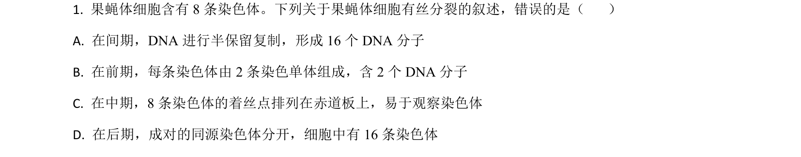
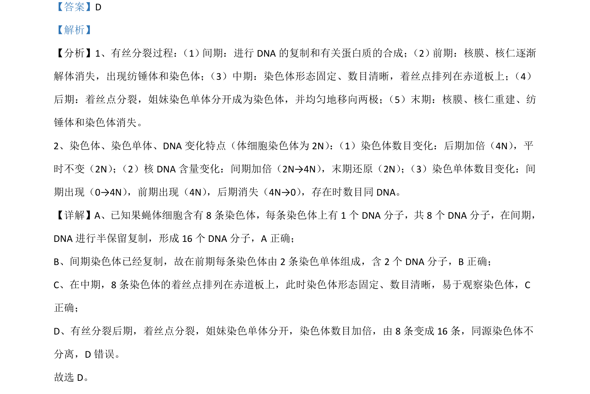

考点：有丝分裂 染色体 DNA复制 着丝点

本题以果蝇体细胞有丝分裂为背景，考查分裂过程中染色体和DNA数目变化。

📄 原 PDF 第 1 页：
素材/真题/吉林/2008-2024·（吉林）生物高考真题/2021年高考生物试卷（全国乙卷）（解析卷）.pdf
【答案】D 【解析】 【分析】1、有丝分裂过程： （1）间期：进行DNA的复制和有关蛋白质的合成； （2）前期：核膜、核仁逐渐 解体消失，出现纺锤体和染色体； （3）中期：染色体形态固定、数目清晰，着丝点排列在赤道板上； （4） 后期：着丝点分裂，姐妹染色单体分开成为染色体，并均匀地移向两极； （5）末期：核膜、核仁重建、纺 锤体和染色体消失。